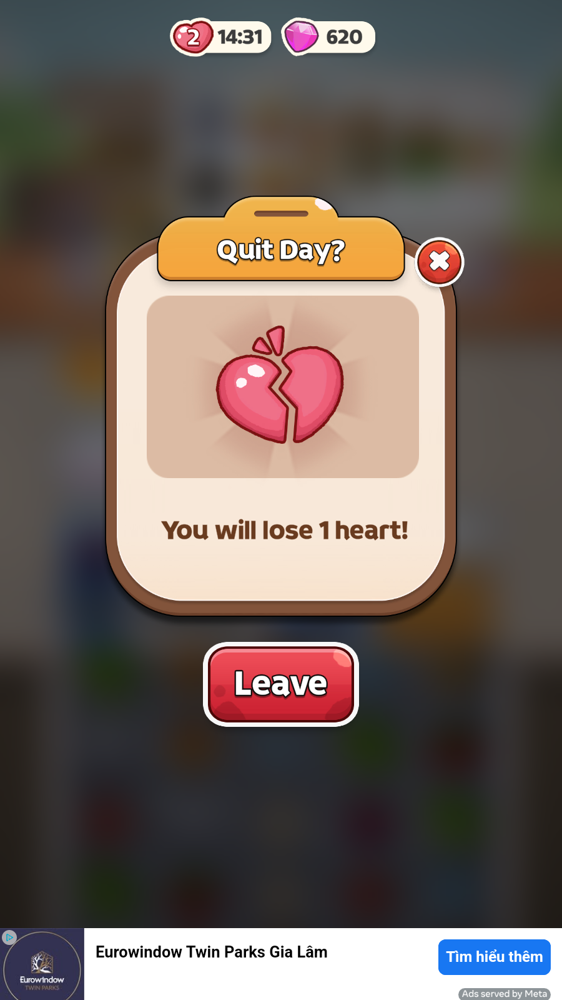

Tim (mạng)
Mô tả
- Mỗi lần vào màn cần 1 tim (tối đa 5). Thắng màn thì trả lại tim, thua hoặc thoát giữa chừng thì mất tim.
- Tim hồi 1 cái mỗi 30 phút (
cooldown= 1 800 s). Hết tim mở popup More Lives: xem quảng cáo +1 tim hoặc trả 800 gem để đầy tim. - Có tim vô hạn theo thời gian (15 phút từ Daily Rewards, 1–24 giờ từ gói IAP) trong lúc đó không bị trừ tim.
- Còn một hệ "tim trong màn" (
ingame_heart_config) có UI và config nhưng không thấy chạy ở 1.15.
Thiết kế chi tiết
Tóm tắt thiết kế
- APK Tim tối đa 5, hồi 1 tim / 1 800 s, refill 800 gem (
heart_config). - Code Tim được giữ khi vào màn và trả lại khi thắng; thua hoặc Leave thì mất (
RecoverHeartlý dowin/ReleaseHeartHolder). - Playtest Day 15: thua 3 lần liên tiếp, tim 5 -> 2; popup Quit Day? báo "You will lose 1 heart!".
- Playtest More Lives: +1 heart FREE bằng quảng cáo hoặc Full 800 gems; Shop không bán gói tim riêng, tim vô hạn chỉ đi kèm gói.
- Nhận định Tim thắng-trả-lại khiến người giỏi gần như không bao giờ hết tim: áp lực tim đánh vào người thua nhiều, đúng nơi bán gói hồi sinh.
Luồng người chơi từng bước
- Kiểm tra timHệ thống Code
IsEnoughHeartToPlayLevel: đang vô hạn hoặc còn tim. - Giữ tim khi vào mànHệ thống Code
UseOneHearttạoSystemHeartHolder; đồng hồ hồi bắt đầu. - Thua / thoátNgười chơi PlaytestLeave hiện cảnh báo mất 1 tim; thua màn trừ tim thật.

Pause -> Restart: Quit Day? You will lose 1 heart! - Hết timGiao diện PlaytestPopup More Lives với 2 lối: quảng cáo hoặc 800 gem.

Popup More Lives: +1 heart FREE (ad) và Full 800 gems - ThắngHệ thống Code
RecoverHeart("win")trả lại tim.
Nguồn tim và tim vô hạn
| Nguồn | Hiệu ứng | Nguồn dữ liệu |
|---|---|---|
| Hồi theo giờ | +1 tim / 30 phút | heart_config.cooldown |
| Quảng cáo More Lives | +1 tim | UIPopupHeartRefill.OnClickUseAds |
| Refill gem | Đầy tim, 800 gem | heart_config.refillCost |
| Daily Rewards (ad) | Vô hạn 15 phút | Playtest Day 13 |
| Starter Pack | Vô hạn 60 phút | iap_shop_config |
| No Ads Bundle | Vô hạn 120 phút | iap_shop_config |
| Apprentice / Commis / Sous / Master / Legendary | 180 / 360 / 720 / 1 080 / 1 440 phút | iap_shop_config |
Vô hạn tính từ lúc kích hoạt; xác nhận Playtest hiện 3h / 6h / 12h / 18h / 24h trên thẻ Shop.
Trạng thái tim trong save (16/11)
| Key | Đầu phiên | Cuối phiên |
|---|---|---|
| live | 5 | 1 |
| DurRcvHeart | 1 800 | 1 633 |
| TimeSetHeart | 2026-11-16T12:12:15Z | 2026-11-16T14:04:12Z |
| DurUnlimitHeart | 900 | 900 |
Nguồn: save_start / save_end profile.dat. DurUnlimitHeart 900 giây = 15 phút (thưởng từ ngày đầu).
Vận dụng cho game khác
- Giữ-tim-khi-vào, trả-khi-thắng làm tim chỉ "đắt" với người thua: dễ cân kinh tế hơn trừ tim khi vào.
- Dùng giờ online thay giờ máy để chống gian lận hồi tim.
- Hai lối hồi tim (quảng cáo +1, gem đầy) đặt cùng một popup tăng chuyển đổi thay vì chia nhiều màn.
Bảng tổng hợp mọi tính năng đã làm chi tiết: FoodiePop_ThietKeChiTiet.xlsx.
Mở khóa & điểm vào
Có từ đầu; tim là item live (Currency-live).
Điểm vào:
- Counter tim trên header Home (
UIHeartCounter), bấm + mở More Lives - Bấm vào màn khi hết tim: tự mở
UIPopupHeartRefill - Retry / Next sau màn thua khi hết tim
- Pause -> Home / Restart: popup Quit Day?
Cách hoạt động
- Bấm vào màn:
IsEnoughHeartToPlayLevelkiểm tra tim (hoặc đang vô hạn). - Đủ tim:
LevelPlayLoadAndSetupControl.SetUpBeforeLoadLevelScenegọiHeartSystemController.UseOneHeart(lý dolevel_entry), tim bị "giữ" bởiSystemHeartHolder. - Thắng:
ProcessEndGamegọiRecoverHeart(lý dowin), tim được trả lại. - Thua hoặc Leave giữa màn:
ReleaseHeartHolder, tim mất hẳn; Pause -> Restart / Home hiện cảnh báo "Quit Day? You will lose 1 heart!". - Đồng hồ hồi: sau 1 800 s mỗi tim;
GetHeartAmounttự cộng tim đã hồi khi mở app (tính từTimeSetHeart). - Hết tim: popup More Lives, +1 tim bằng quảng cáo (
ads_heart) hoặc 800 gem refill (refill_heart).
Ảnh chụp
Bấm ảnh để phóng to, dùng phím ← → để chuyển ảnh. Nhãn màu cho biết nguồn bằng chứng của ảnh.


Phần thưởng
| Ngữ cảnh | Phần thưởng | Evidence |
|---|---|---|
| Xem quảng cáo ở More Lives | +1 tim | UIPopupHeartRefill.OnClickUseAds |
| Daily Rewards (ad) | Tim vô hạn 15 phút | LiveOpBehaviorDailyReward.ReceiveRewards |
| Gói IAP | Tim vô hạn 1–24 giờ | InAppShopDataAccess.OnPurchaseSuccess |
| Hoàn thành map (Build Progress) | Tim vô hạn (reward id unlimited_heart) | UIMapBuildingProgress.TriggerClaim |
Số liệu chính
| Chỉ số | Giá trị | Nguồn |
|---|---|---|
| Tim tối đa | 5 | heart_config.max |
| Thời gian hồi | 1 800 giây (30 phút) / tim | heart_config.cooldown |
| Refill đầy | 800 gem | heart_config.refillCost |
| Tim vô hạn từ gói IAP | 1 – 24 giờ | iap_shop_config |
Use case (10)
Bấm vào từng use case để mở. Mở/đóng tất cả
UC-01 Vào màn tốn 1 tim
Các bước- HomeController gọi UIHomeTabPageMain.PlaySelectedLevel
- IsEnoughHeartToPlayLevel
- SetUpBeforeLoadLevelScene -> UseOneHeart(1)
| Actor | Player |
|---|---|
| Trigger | Bấm nút Day N |
| Điều kiện | Còn tim hoặc đang vô hạn |
| Kết quả | Tim hiển thị giảm 1 và đồng hồ hồi bắt đầu chạy từ lúc vào màn |
| Quy tắc / số liệu | Playtest: đồng hồ lần đầu 26:38 (không phải 30:00) |
| Evidence | HeartSystemController.UseOneHeart |
UC-02 Thắng màn trả lại tim
Các bước- ProcessEndGame
- RecoverHeart(holder, "win")
| Actor | System |
|---|---|
| Trigger | Thắng màn |
| Điều kiện | Đã giữ tim ở UC-01 |
| Kết quả | Tim về lại như trước khi vào màn (Day 13 / 14 vẫn 5 Max) |
| Quy tắc / số liệu | Cũng trả tim ở autoplay_loss và level_setup_failed |
| Evidence | LevelPlayLoadAndSetupControl.ProcessEndGame |
UC-03 Thua màn mất tim
Các bước- ReleaseHeartHolder
- Tim không được trả
| Actor | System |
|---|---|
| Trigger | Màn thua (hết slot / hết giờ) |
| Điều kiện | Tim đang giữ |
| Kết quả | Day 15: 5 -> 4 -> 3 -> 2 sau 3 lần thua |
| Quy tắc / số liệu | Playtest 16/11 |
| Evidence | HeartSystemController.ReleaseHeartHolder |
UC-04 Thoát giữa màn
Các bước- Popup "Quit Day? You will lose 1 heart!"
- Leave: RecordLevelQuit + EndGame
- Nếu hết tim, retry mở More Lives
| Actor | Player |
|---|---|
| Trigger | Pause -> Restart / Home -> Leave |
| Điều kiện | Đang trong màn |
| Kết quả | Mất 1 tim |
| Quy tắc / số liệu | Nút Leave đỏ, có nút X huỷ |
| Evidence | LevelPlayLoadAndSetupControl.TrackQuit |
UC-05 Tim hồi theo thời gian
Các bước- GetHeartAmount so sánh thời gian hiện tại với TimeSetHeart + DurRcvHeart
- Thêm 1 + floor((giây - DurRcv) / cooldown), chặn ở max
| Actor | System |
|---|---|
| Trigger | Mở app / mở popup / hết cooldown |
| Điều kiện | Tim < max |
| Kết quả | Tối đa 5; đồng hồ hiển thị giây còn lại |
| Quy tắc / số liệu | cooldown = 1 800; dùng thời gian online OnlineTimeCheck.UtcNow (chống chỉnh giờ máy) |
| Evidence | HeartSystemController.GetHeartAmount |
UC-06 Xem quảng cáo +1 tim
Các bước- UIPopupHeartRefill.OnClickUseAds (placement heart_refill, ads_heart)
- OnDoneRw -> AddHeart(1)
- Hiện popup thưởng
| Actor | Player |
|---|---|
| Trigger | Bấm nút cam +1 heart FREE |
| Điều kiện | Có rewarded sẵn sàng |
| Kết quả | +1 tim |
| Quy tắc / số liệu | Không có giới hạn số lần trong code đọc được |
| Evidence | UIPopupHeartRefill.OnClickUseAds |
UC-07 Refill đầy tim bằng gem
Các bước- OnClickUseGoldFull trừ hard 800
- RefillHeart("refill_heart")
| Actor | Player |
|---|---|
| Trigger | Bấm nút xanh Full 800 gems |
| Điều kiện | Đủ 800 gem |
| Kết quả | Tim về max |
| Quy tắc / số liệu | Thiếu gem: NotifyGemShortage mở gói gem giảm giá |
| Evidence | UIPopupHeartRefill.OnClickUseGoldFull |
UC-08 Kích hoạt tim vô hạn
Các bước- ActivateUnlimitedHeart(durationSeconds)
- Ghi TimeUnlimitHeart + DurUnlimitHeart
- Gọi onUnlimitedHeartActivated
| Actor | System |
|---|---|
| Trigger | Mua pack / nhận quà |
| Điều kiện | Pack có unlimited_heart |
| Kết quả | Không trừ tim trong thời gian đó; cộng dồn khi nhận thêm |
| Quy tắc / số liệu | Nguồn: gói IAP (60–1 440 phút), Daily Rewards (15 phút), Login 7 ngày, UIMapBuildingProgress.TriggerClaim, R1RewardMap.Grant |
| Evidence | HeartSystemController.ActivateUnlimitedHeart |
UC-09 Cập nhật config từ server
Các bước- UpdateRemoteConfig đọc heart_config
- Cập nhật max / cooldown / refillCost
- NotifyMaxHeartChanged
| Actor | System |
|---|---|
| Trigger | Remote config sẵn sàng |
| Điều kiện | Có key heart_config |
| Kết quả | Nếu chuỗi rỗng dùng config cũ (log "Remote config string is empty") |
| Quy tắc / số liệu | Mặc định code: max 5, cooldown 0x708 = 1 800, refillCost 800 |
| Evidence | HeartSystemController.UpdateRemoteConfig |
UC-10 Tim trong màn (ingame_heart_config)
Các bước- UIInLevelHUDHeartStyle.SetUp bật
_heartCounter - LevelBaseCakeOrderAbstract.LostHeart(reason) trừ 1 khi lý do nằm trong lostReasonFlags (7 = WaitTimeOut + WrongOrder + Burned)
| Actor | System |
|---|---|
| Trigger | Khởi tạo màn với heartConfig khác null |
| Điều kiện | Có CakeLevelInitData.heartConfig |
| Kết quả | Config có enableFromLv 3, initAmount 5, saveMeCost 500, saveMeAdd 3, maxAds 99 |
| Quy tắc / số liệu | Không thấy nơi nào gọi LostHeart trong xref và HUD Playtest không có đếm tim trong màn: coi là không chạy ở 1.15 (Nhận định) |
| Evidence | LevelBaseCakeOrderAbstract.LostHeart |
Cấu hình (12)
Gộp mọi nguồn: const trong code, giá trị mặc định trong APK, storage key, AB test, cờ server.
| Nguồn | Key | Kiểu | Giá trị | Ý nghĩa | Nơi định nghĩa |
|---|---|---|---|---|---|
| json default | heart_config.max | int | 5 | Tim tối đa | RC default; HeartConfig ctor max = 5 |
| json default | heart_config.cooldown | int (giây) | 1800 | Giây hồi 1 tim | RC default; HeartConfig ctor = 0x708 |
| json default | heart_config.refillCost | int (gem) | 800 | Giá refill đầy | RC default; HeartConfig ctor = 800 |
| json default | ingame_heart_config | json | {enableFromLv:3, initAmount:5, lostReasonFlags:7, saveMeCost:500, saveMeAdd:3, maxAds:99} | Tim trong màn (không chạy) | RC default; InGameHeartRemoteConfig.RemoteConfigKey |
| code const | LostHeartReason | enum | WaitTimeOut 0, WrongOrder 1, Burned 2 | Lý do mất tim trong màn | CakeOrder.InGame.LostHeartReason |
| code const | KEY_LAST_TIME_UPDATE_HEART_AMOUNT | string | TimeSetHeart | Mốc thời gian cập nhật tim | HeartSystemController |
| code const | KEY_INT_DURATION_REMAINED_RECOVER_HEART | string | DurRcvHeart | Giây còn lại tới tim kế | HeartSystemController |
| code const | KEY_INT_DURATION_SECONDS_UNLIMITED_HEART | string | DurUnlimitHeart | Tổng giây tim vô hạn | HeartSystemController |
| code const | KEY_TIME_BEGIN_UNLIMITED_HEART | string | TimeUnlimitHeart | Thời điểm bắt đầu vô hạn | HeartSystemController |
| code const | UnlimitedHeartRewardItemInfo.RewardId | string | unlimited_heart | Id phần thưởng tim vô hạn trong pack | UnlimitedHeartRewardItemInfo |
| asset | iap_shop_config (cột cuối) | int (phút) | starter 60, removeads_bundle 120, small 180, medium 360, big 720, ultra 1 080, legend 1 440 | Thời gian tim vô hạn của gói | iap_shop_config / InitManagers.unity |
| server info | heart_config / ingame_heart_config live 16/11 | - | không có trong 17 key live | Giá trị live = mặc định APK (Nhận định) | frc_activate_20261116.json |
Backend / server
| Command | Chiều | Mục đích |
|---|---|---|
Remote Config heart_config / ingame_heart_config | server→client | Chỉnh max, cooldown, giá refill |
OnlineTimeCheck.UtcNow | client→server | Giờ chuẩn để tính hồi tim |
Giao diện (UI)
| Element | Class | Mục đích |
|---|---|---|
| Counter tim | CakeOrder.UI.UIHeartCounter | Hiện 5 / Max, đồng hồ đếm ngược, bấm + mở More Lives |
| Popup More Lives | CakeOrder.BaseUI.UIPopupHeartRefill | +1 heart FREE (ad) hoặc Full 800 gems |
| Popup Quit Day? | CakeOrder.InGame.UIInLevelCakeOrder | Cảnh báo mất 1 tim khi Leave |
| HUD tim trong màn | CakeOrder.InGame.UIInLevelHUDHeartStyle | Đếm tim trong màn (không chạy) |
Analytics (2)
| Event | Tham số | Khi nào |
|---|---|---|
currency_spend / currency_earn | source level_entry, recover_heart, add_heart, heart_regen, refill_heart, unlimited_heart_activation; currency_name qua NormalizeCurrencyName (tim không phải coin / gem nên thành unknown) | Các lần đổi số tim có tracking source |
ads_reward_clicked / ads_reward_completed | placement heart_refill | Bấm +1 FREE xem video |
Storage keys
packs.item.intData.live DurRcvHeart DurUnlimitHeart packs.item.dateTimeData.TimeSetHeart TimeUnlimitHeart
Còn thiếu / chưa xác minh
- Chưa xác minh tim bị trừ lúc vào màn hay lúc thua: code giữ tim bằng
SystemHeartHolderkhi vào màn rồi thả khi kết thúc; Playtest chỉ thấy số tim giảm sau màn thua. - Không thấy giới hạn số lần xem quảng cáo +1 tim trong
OnClickUseAds. - Hệ tim trong màn (
ingame_heart_config,LostHeart) không có nơi gọi trong xref: chưa chắc có chạy trong luồng khác. - Key JSON
initAmountcủa RC khác tên fieldinitHeartcủaHeartConfig(stub): có thể bị bỏ qua khi parse.
Tính năng liên quan
Tiền tệ: coin & gem Cửa hàng & IAP Quảng cáo (rewarded, inter, banner, app open) Luồng màn: vào, thắng, thua Quà hằng ngày (Daily Rewards) Gói ưu đãi (starter, booster pack, remove ads)
Nguồn đã đọc
CakeOrder.HeartSystem.HeartSystemController.cCakeOrder.BaseUI.UIPopupHeartRefill.cCakeOrder.UI.UIHeartCounter.cCakeOrder.InGame.LevelPlayLoadAndSetupControl.cCakeOrder.InGame.InGameHeartRemoteConfig.cData/remote_config/frc_defaults_115.json_analysis/live/fp_20261116/save_end/profile.dat_analysis/live/fp_20261116/RESULTS_LIVE.md